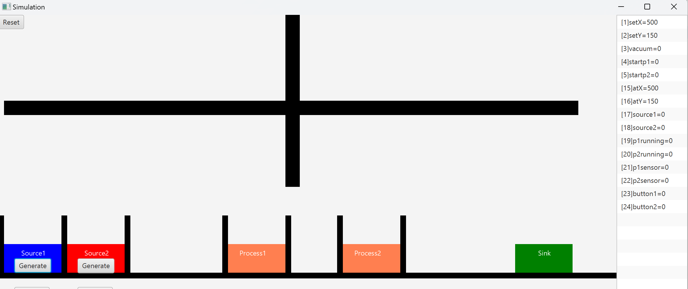
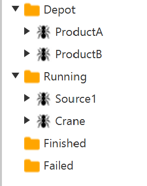

Start the crane simulation program, it should look like the picture below. Within the simulation, there's a crane capable of motions along the x y plane. Equipped with a vacuum gripper, the crane can affix products to itself and move them around. Within the simulation model, there exist two sources: source 1 for part A and source 2 for part B. Additionally, two processes are available for part processing. Upon completion, a part can be released into the sink for removal from the system.

The manufacturing environment includes sensors and control signals that can be reach through MODBUS TCP.
| Name | Type | Direction | Address | Explanation |
|---|---|---|---|---|
| setX | Integer | Write | 1 | Crane set value for x |
| setY | Integer | Write | 2 | Crane set value for y |
| vacuum | Boolean | Write | 3 | Crane lift mechanism Vacuum on/off |
| startp1 | Boolean | Write | 4 | Start signal to process 1 |
| startp2 | Boolean | Write | 5 | Start signal to process 2 |
| atX | Integer | Read | 15 | Crane current position in x |
| atY | Integer | Read | 16 | Crane current position in y |
| source1 | Boolean | Read | 17 | Proximity sensor in source 1 |
| source2 | Boolean | Read | 18 | Proximity sensor in source 2 |
| p1running | Boolean | Read | 19 | True if process 1 is running |
| p2running | Boolean | Read | 20 | True if process 2 is running |
| p1sensor | Boolean | Read | 21 | Proximity sensor in process 1 |
| p2sensor | Boolean | Read | 22 | Proximity sensor in process 2 |
| button1 | Boolean | Read | 23 | Button 1 state |
| button2 | Boolean | Read | 24 | Button 2 state |
In this example, we'll develop a CMAS model that utilises the integrated planner. This planner can be used to automate transportation operations, i.e, handling the movement of parts or resources. By employing this approach, we can avoid specific transportation goals and concentrate solely on manufacturing planning for parts. Additionally, this technique can be applied to resources, such as robot tools, e.g, the planner can then automatically swap tools on the robot as necessary. The planner requires; location interfaces, transportation interfaces and skill requirements. A location is a specialised interface that can serve as a start or end point. While a transportation is a interface that can be used to transport between two locations.
Begin by creating a new empty model in CMAS.
In this step we will create the two parts ProductA and ProductB. To better organise the project start by adding a new folder to the modelling tree, click the folder,, and rename it to Products. Select the folder and enable the property MakeInstances by setting it to true.
Inside that folder create two Part agents and name them ProductA and ProductB. For each product set AutoDeploy to false to make sure that products are not deployed automatically during the start. We will later create our own logic for determining when a part can be deployed.
Open the Interfaces folder and create a new Interface for each product and name it InterfaceSource. This interface is to make sure that we can place a part in the Source resource later on. In the same way also create an Interface named Crane to enable the crane to handle a part.
Create a new folder in the modelling root and name it Templates make sure that MakeInstances property is set to false. Inside the Templates folder create a new VariableObject and name it Location. This will be used as a base for any location in the system. Open the Location variable and inside Items create two new VariableInteger and name them x and y.
Now create a new folder named Resources and set the property MakeInstances to true. Inside that folder create a new Resource agent and name it Source1. We want to make use of the proximity sensor to automatically deploy a new product agent when a product enters the source. The first step is to make sure that Source1 can host a product by creating a new InterfaceSpecialisation named InterfaceSource. To be able to use the interface as a location change the property SpecialisationName to Location. Now we need a location variable, drag the template variable Location from the Template folder to the new interface folder called Specialisation and select Copy.
We also need to create two specialisation skills for the Interface. Create a new Skill inside the Skills folder, name it pickPart and change the PostAction to DETACHED. Also create a Skill named placePart with PostAction set to ATTACHED. These skills can now be used by the internal AI planner or by other resources to attach or detach from the source. For each skill we can add logic required to do the real attach/detach, however, for the source we can leave it empty since there is no specific logic required to attach/detach.
The second step is to detect when a new part arrives, for that we can utilise the proximity sensor inside the source. To read the value of the sensor we need to add sensor1 as a variable. Inside the Variables folder on Source1 create a new VariableBoolean and name it sensor1. Select the new variable sensor1 and set the property source to modbus.tcp: and change the address to 17. The sensor1 variable is now connected via MODBUS to source1 inside the simulation. Set the ReadOnly property to true since the sensor is an input signal and it is not possible to write to it. Now we need to write the logic for the sensor. Open Actions editor for Source1 and write the following program that will automatically deploy a part when the proximity sensor change state from false to true.
It should now be possible to test the model by pressing run,, in CMAS.
Place a new a new Product inside the source by pressing the [generate] button inside Source1 in the simulation. This will create a new part and activates the proximity sensor. Inside CMAS a new part agent ProductA should be deployed according to the logic in Source1. The product will be finished immediately and transfered to the Finished folder since it has no goals yet. You can see the part by expanding the run time tree and the Finished folder.
Inside the Resources folder create a new Resource agent named Crane. Add five VariableInteger in the Variables folder and map them to setX, setY, atX, atY and vacuum according to the modbus table. By setting setX and setY we can make the crane move and by reading atX and atY we can see the current position. The vacuum variable will turn on the vacuum cup to be able to pick up products. To control the crane we need to create two new VariableInteger named targetX and targetY They will be used internally within the agent, hence, there is no need to map them to MODBUS. Now we need to write the logic for the Crane controller. Open the Actions editor for Crane and write the following program.
It should now be possible to test the model by pressing run in CMAS. The runtime three should look like this.

In the runtime tree expand the Crane and the Variables folder and select the targetX variable. In the Properties window you should see the value for current position of the Crane (crane default position at start is 500). Change the value to 300 and press the [TAB] key. The crane should now start to move to 300 in the x direction.
Press stop to stop the runtime environment.
In the next step we need to create an interface that can be used by other agents to command the crane to do transportation. The planner can also utilise the crane if we create a specialised transportation interface. To achieve this create an InterfaceTransport inside Interfaces and rename the new interface to InterfaceCrane. The new interface will include three Specialisation variables, FromLocation, ToLocation and Step. We must now make sure that the from and to variables are compatible with our location variables. Go to the Templates folder and expand Items inside the variable Location. Then drag x and y to the FromLocation variable in the new interface and drop them on Items. Now the FromLocation have a x and a y variable. Do the same for the ToLocation.
The Step variable is an integer that is used to detect if the transportation is approaching a pick (Step=1) or a leave position (Step=2).
Now select the Transport skill inside Skills and rename it to transportPart. Double click it to open the skill editor.
The code now includes a function called onNegotiate. This function is invoked when the planner needs to verify whether the skills can manage transportation from the FromLocation to the ToLocation. It must return an integer value representing the cost to do the transportation, and -1 if unable. By examining the coordinates on remoteinterface.Specialisation.FromLocation and remoteinterface.Specialisation.ToLocation, logic can be written to consider crane reachability. However, for this example, we can leave it blank as long as we return a cost of 0 (we can also use this.cost to get the cost of the skill). To observe the negotiation process, a writeln statement can be added inside the onNegotiate function.
The next step is to create functions to support the reading of the signals. Enter the following functions in the skill. To make these functions available for all other functions write them at the top directly after the program statement.
The next step is to create the transportation skill. In this example, a SAFE_HEIGHT parameter is used to ensure the crane's motion is safe and free from collisions. Note that there are many ways to implement the transportation skill.
Regardless of the method, it is crucial to remember that the OnRun function should not take too long to execute due to its real-time nature, as this could compromise real-time performance. Therefore, we need a strategy to execute the skill, as the crane requires time to complete the transportation. If the skill requires additional time to complete, OnRun should continuously return processplan.running until the task is finished. CMAS will then call the function cyclically. Once the skill is complete, OnRun can return processplan.done to indicate the task's completion.
In this example, the function pickOrPlace tracks the sequence of actions and performs only one step at a time. This allows the OnRun function to iteratively call pickOrPlace, maintaining real-time performance.
Inside the Resources folder create a new Resource agent named Process1. Now, add three agent variables as boolean,
Process 1 need to be compatible with the two products and to do that we need to add an interface. Select InterfacePart for Source1 and right click in the modelling tree and select copy. Now select Interfaces inside Process1 and right click in the tree and select paste and rename it to InterfaceProcess.
The next step is to create a skill on Process1 that will start the process. Select Skills and create a new Skill Structured Text and name it runProcess1. Edit the skill and enter the following program.
To be able to trigger the built in AI planner to start we need to add a requirement to the skill. Select the folder Requirements in the skill runProcess1 and add a new. Name the new requirement MustBeAttached and change the WorkFlowType to ATTACHED. This indicates that any one that want to run the skill runProcess1 must first be attached to the interface to do so.
Now create Process2 in the same way and map it to the simulation.
Inside the Resources folder create a new Resource agent named Sink. For the Sink create a new InterfaceSpecialisation named InterfaceSink. In the same way we did it for the source or processes change the property SpecialisationName to Location and drag the template variable Location from the Template folder to the new interface folder called Specialisation and select Copy. Also make sure that you have a pick and place skills in the same way as before.
Now, create a new Skill on the interface and name it packing. Since the sink won't perform any actions, we can leave the skill unchanged. However, do not forget to add an ATTACHED requirement on the packing skill.
The model is almost done but we need to set coordinates for all our locations. The locations are used by the planner to command the crane to do transportations. Start by opening the Location Specialisation variable on the Source1 interface InterfaceSource and change the x value to 55 and the y value to 82.
| Entity | Variable | Value |
|---|---|---|
| Source1 | Location.x | 55 |
| Source1 | Location.y | 82 |
| Process1 | Location.x | 440 |
| Process1 | Location.y | 82 |
| Process2 | Location.x | 640 |
| Process2 | Location.y | 82 |
| Sink | Location.x | 945 |
| Sink | Location.y | 82 |
Double-click on ProductA to open the Goal Chart view. Now create three goals, right-click in the top-left box and select Add New Goal.
For each goal, set the following values:
| Name | Interface name | Process plan name |
|---|---|---|
| GoalProcess1 | InterfaceProcess | runProcess1 |
| GoalProcess2 | InterfaceProcess | runProcess2 |
| GoalPacking | InterfaceSink | packing |
Now create a similar goal chart for ProductB.
When you press Run to start the model, CMAS will connect to the simulation based on the variables you have defined. If you place a ProductA in Source1 by clicking the [Generate] button in the simulation, the Source1 agent in CMAS will detect that and deploy a new ProductA agent. This agent will then begin executing its goals sequentially.
For example, the first goal, GoalProcess1, will initiate a negotiation process to find a resource capable of completing the task runProcess1. In this case, Process1 will respond, "I can do it, but I have a requirement that you must first be physically attached to me".
This requirement will trigger the planner to search for a solution to attach ProductA to Process1. The planner begins by creating a map of all possible movements for products, materials, and resources. This map is then used to identify a solution that satisfies the requirement.
You can view the map generated by the planner in the console by enabling PathFinder.ShowMapResults in the preferences. Additionally, you can see the solution identified by the planner by enabling ShowPathFinderResults. This can be useful for identifying errors or mistakes in the model.